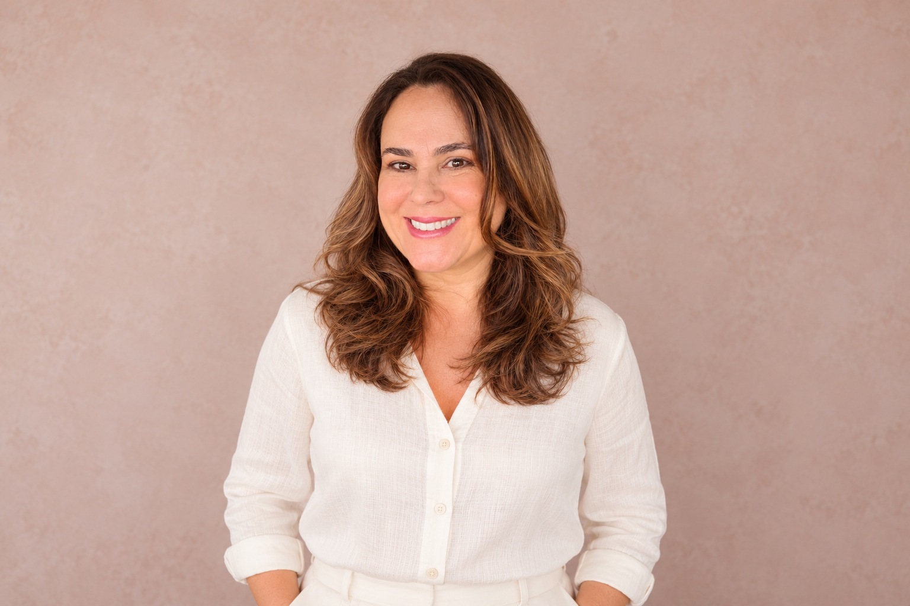
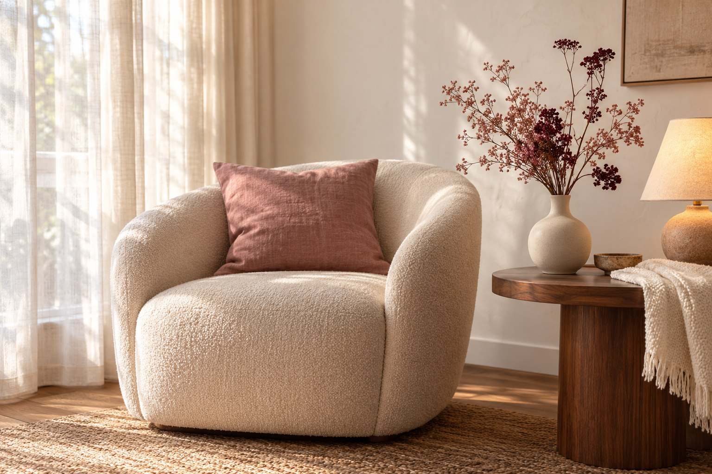
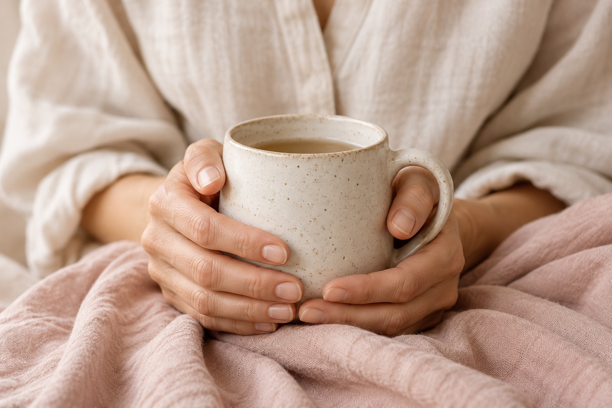

Terapia integrativa
Um espaço para olhar suas emoções com mais clareza e acolhimento.
Vamos conversarUM TEMPO PARA CUIDAR DE VOCÊ
Um espaço de escuta e acolhimento para olhar com carinho para sua história e seu tempo.

SOBRE MIM
Minha própria história me ensinou a importância de ser acolhida. Hoje, levo essa vivência para uma escuta humana, com respeito à sua história e ao seu tempo.
Uma escuta humana, com respeito à sua história e ao seu tempo.
Comecei a fazer terapia cedo e, ao longo dos anos, conheci diferentes terapias integrativas. Esse caminho me ajudou a reconhecer quem sou e os meus limites.
Hoje, trago essa experiência para um cuidado que respeita a singularidade de cada pessoa. As práticas integrativas fazem parte desse olhar como um apoio complementar.
ATENDIMENTOS
Um espaço para olhar suas emoções com mais clareza e acolhimento.
Vamos conversarUm olhar para o corpo como parte do seu processo de autoconhecimento.
Saiba maisUma prática integrativa que faz parte das possibilidades de cuidado.
Saiba maisCuidado podal e facial em um encontro de atenção e presença.
Saiba maisUM ESPAÇO PARA VOCÊ
Ambiente seguro, acolhedor e atento ao que realmente importa: você.

Um espaço para você se sentir
à vontade, no seu tempo.

Para olhar para sua história
com mais clareza e gentileza.
Práticas que se complementam
para o seu bem-estar.
COMO FUNCIONA
Um processo simples, leve
e pensado para você.
Um primeiro contato para eu te conhecer e entender suas necessidades.
Juntas, olhamos para o que você está vivendo e o que deseja neste processo.
Conversamos sobre as possibilidades e combinamos o próximo encontro.
Seu tempo.
Sua história. Seu caminho.
Um encontro para olhar para si com mais carinho.
DÚVIDAS FREQUENTES
É só entrar em contato pelo WhatsApp. Na conversa, você pode contar o que procura e consultar horários e valores antes de combinar seu atendimento.
Você não precisa decidir tudo antes do primeiro contato. Podemos conversar sobre o seu momento e esclarecer como funciona cada prática.
Os atendimentos presenciais acontecem em São João da Boa Vista–SP. Entre em contato para confirmar o endereço e as modalidades disponíveis para a prática que você procura.
O primeiro passo pode ser
uma conversa.